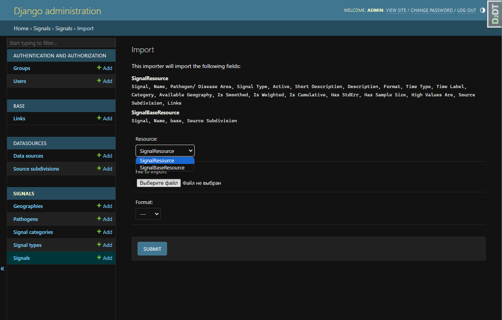
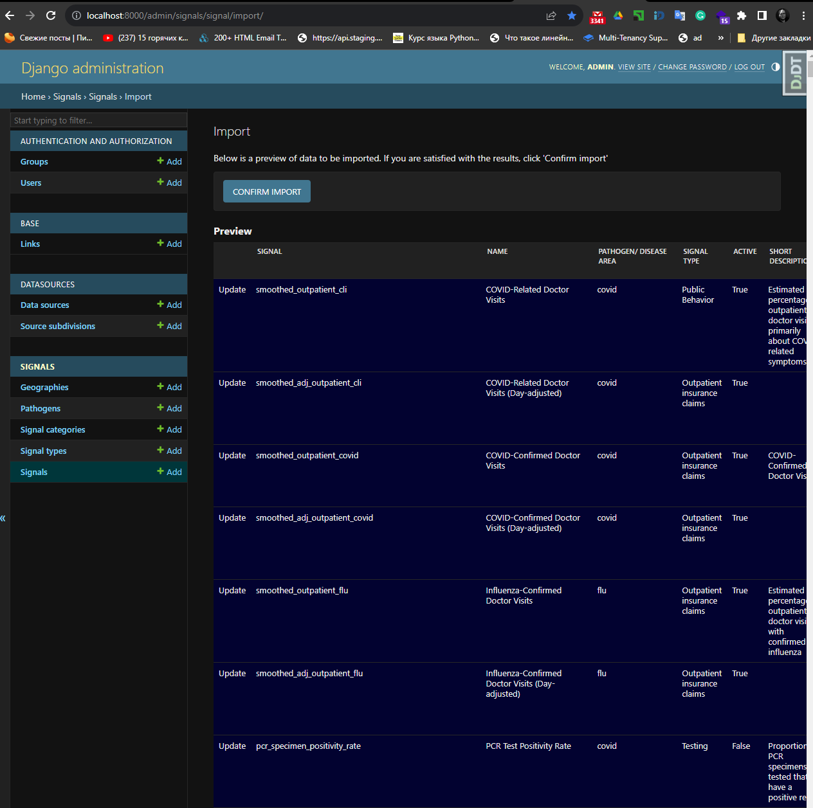
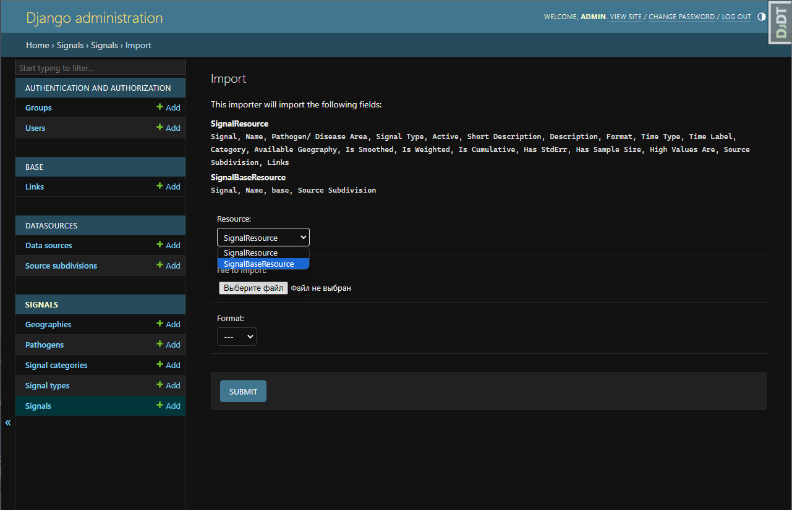
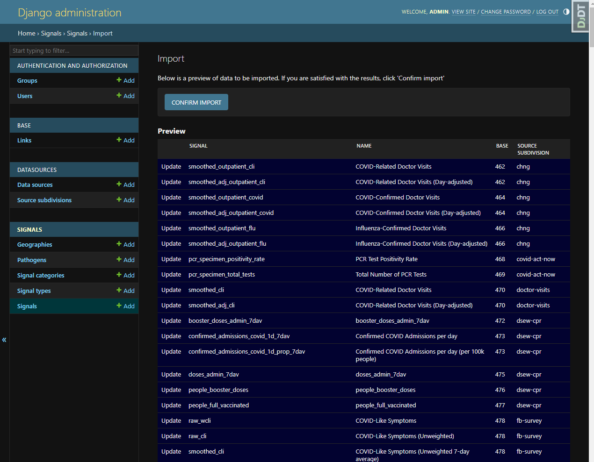

Import data from admin interface
For data import used django-import-export library
The code consists of Django resource classes that are used for importing and exporting CSV files using the Django Import-Export library:
Resources
SignalResource- this resource class is used for importingSignalmodels:Defines various fields such as
name,display_name,pathogen,signal_type, andsource.Defines the
before_import_rowmethod, which is called before importing each row and allows for pre-processing of the data.Includes methods like
is_url_in_domainto check if a URL belongs to a specific domain,fix_boolean_fieldsto handle boolean fields, andprocess_linksto process the links field.
SignalBaseResource- This resource class is used for updating already createdSignalmodelsbasefields with base Signals:Defines various fields such as
name,display_name,base, andsource.Defines the
before_import_rowmethod, which is called before importing each row and allows for pre-processing of the data.The
process_basemethod is responsible for processing thebasefield by retrieving the correspondingSignalobject based on the providednameandsource.
SourceSubdivisionResource- this resource class is used for importingSourceSubdivisionmodels:It defines fields such as
name,display_name,description,data_source, andlinks.It includes the
before_import_rowmethod for pre-processing each row before importing.The
process_linksmethod is responsible for processing thelinksfield by creatingLinkobjects based on the provided URLs.The
process_datasourcemethod processes thedata_sourcefield by creating or retrieving aDataSourceobject based on the provided name.
These resource classes provide a structured way to import CSV files. They define the fields, handle pre-processing of data, and interact with the corresponding models and related objects.
Import data flow
CSV preparation
- To import data from a CSV file must meet the requirements:
CSV file should be properly formatted and contains all the required fields for importing, as specified by the resource classes (
SignalResource,SignalBaseResource,SourceSubdivisionResource).The header rowof the CSV file should match the field names defined in the resource classes.
It should not contain empty rows (empty rows may cause validation errors during the import)
Colums should be saparateb by
","
Othervice you will receive Errors during import process:

Data import
Import
SourceSubdivisioninstances withSourceSubdivisionResource- http://localhost:8000/admin/datasources/sourcesubdivision/import/

Import
Signalinstances withSignalResource- http://localhost:8000/admin/signals/signal/import/  Import
Signal.basefields withSignalBaseResource- http://localhost:8000/admin/signals/signal/import/  